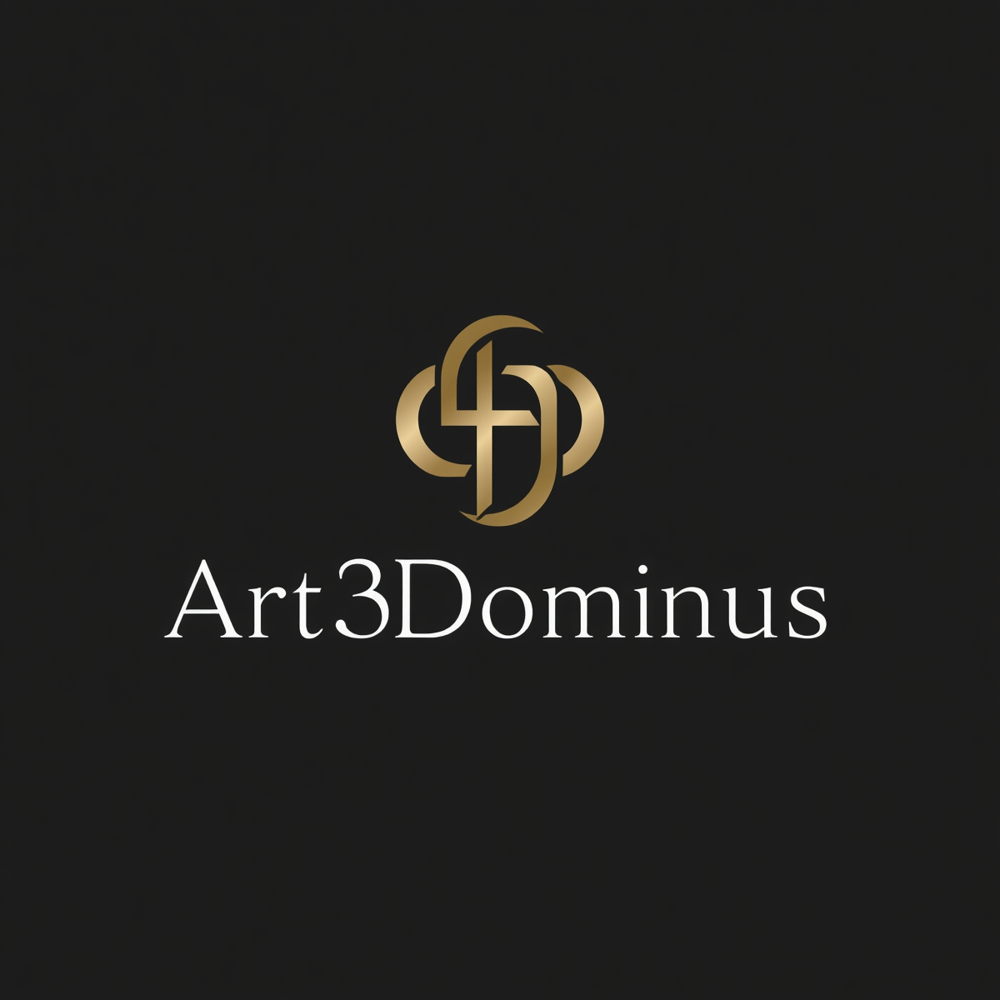

01
✦
FÉ & DEVOÇÃO
↗Artigos cristãos
Peças que expressam fé, inspiração e significado.

Art3DominusARTE • TECNOLOGIA • PROPÓSITO
Criamos peças únicas em impressão 3D, unindo criatividade, personalidade e atenção aos detalhes.
A Art3Dominus transforma ideias em peças físicas por meio da criatividade e da tecnologia de impressão 3D.
De artigos cristãos a colecionáveis, Toy Art, decoração e utilidades, cada criação é uma oportunidade de dar vida a algo especial.
Vamos criar algo? ↗Diferentes universos, uma mesma essência: criar com identidade.
Peças que expressam fé, inspiração e significado.
Personagens, miniaturas e criações cheias de atitude.
Objetos funcionais e decorativos para sua rotina.
Uma seleção de peças com identidade, criatividade e significado.
Explore nossas criações: use os filtros, navegue pelo carrossel e toque em uma foto para ampliar.
O extraordinário começa
com uma ideia.
Tem um projeto em mente ou quer conhecer nosso trabalho? Fale com a gente.